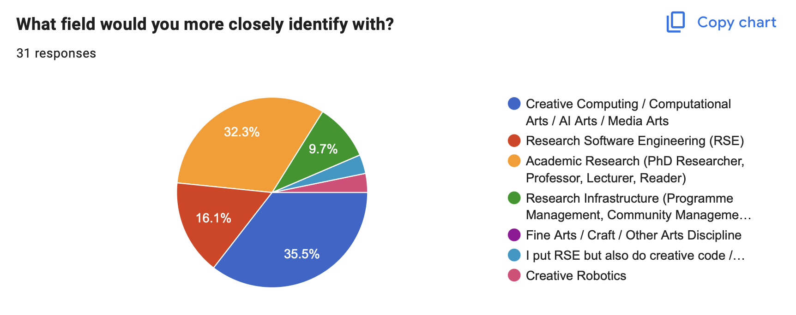
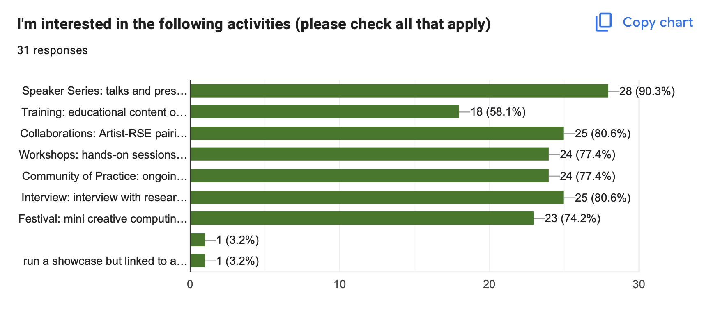
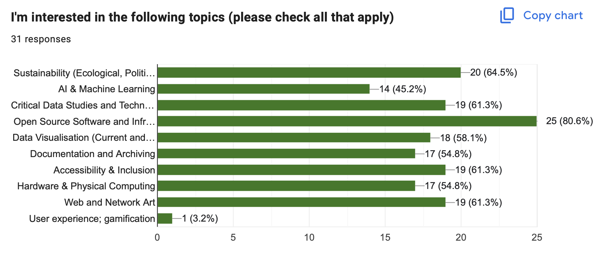
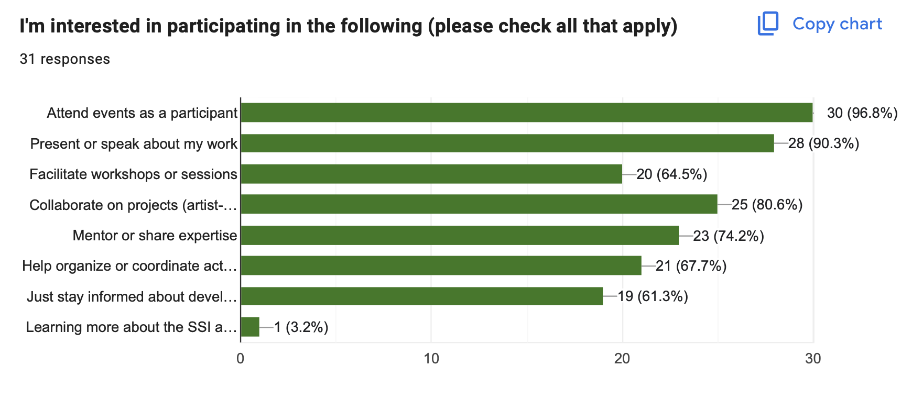
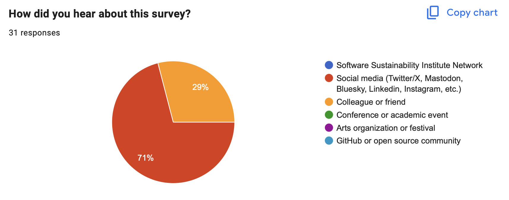

analysing early survey results
Template title
What field would you more closely identify with?


People were interested in the following activities:
- Speaker Series: 90.3%
- Training: 58.1%
- Collaborations: 80.6%
- Workshops: 77.4%


